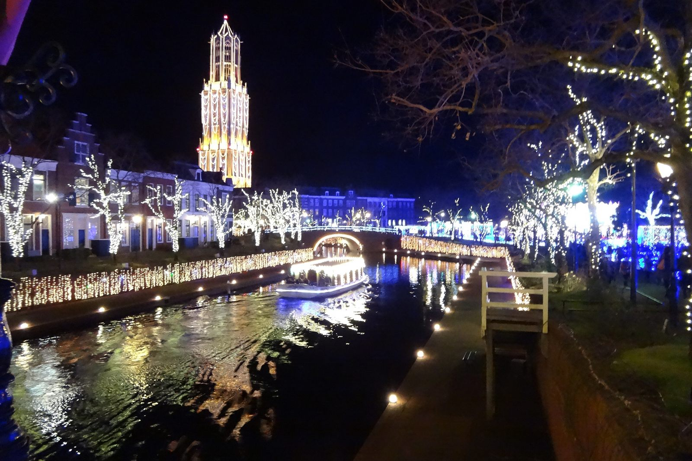
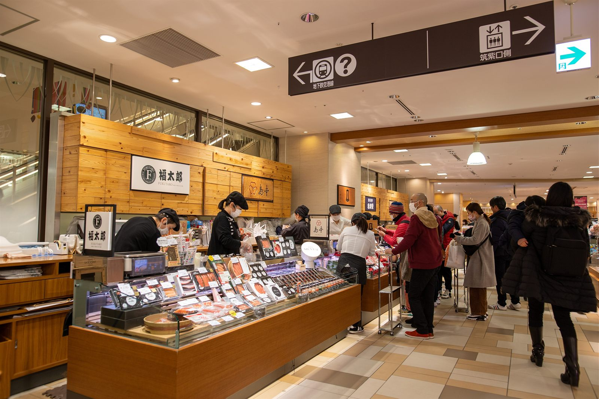
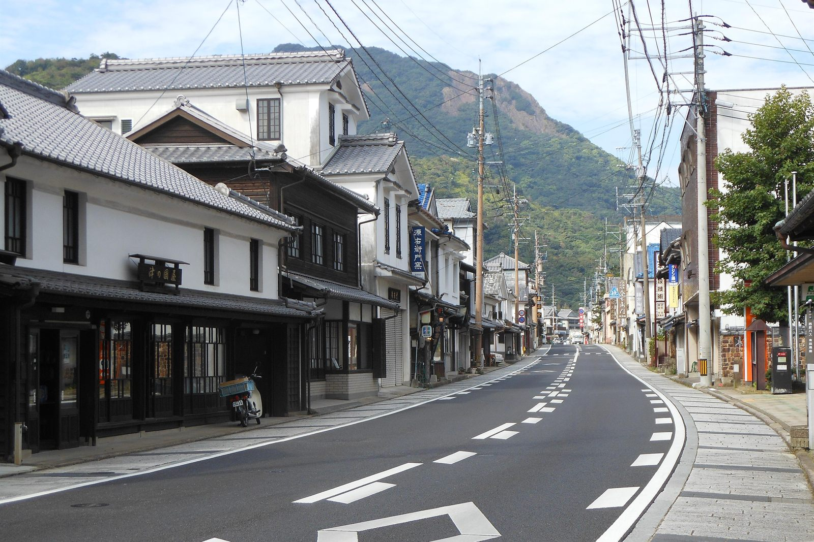

入口一帶
花之路
フラワーロード
四季都有花從入園口一路延伸進去
一進園最先看到的花道，四季輪流換花。拍風車配花的經典位置，每天進出都會經過，不用特別排時間。
已經訂好的車次和時段，會另外標出來。
住宿金額是兩人一間的整筆訂單，當地另收的稅以飯店為準。東洋館的照片是官方示意圖，不一定是我們訂的「藤」房型看出去的景。
大正屋、嬉野萬豪萬楓、Quintessa 天神南、Via Inn 博多口站前和博多紀念日晚餐都取消了。還剩四件：取消西鐵 Grand、買 10/31 的特急車票、買 eSIM、收行李。
打勾只會記在這台裝置的瀏覽器裡，不會真的取消訂單，也不會同步到其他裝置。
匯入行事曆後，會在 10/16 早上 9 點（台灣時間）提醒。特急車票 10/1 就開賣，別等提醒才買。
需要哪一項就點開，其他先收著。
桃園第二航廈 → 福岡國際線
凌晨 04:00 有 Klook 送機到家門口（5 人座休旅車），提早 15 分鐘下樓等。
福岡國際線 → 桃園第二航廈
已線上報到、不辦退稅，10:00 到國際線就好。
時間都是當地時間，依 8/12 的電子機票；託運額度 2 件。出發前一天再用長榮 App 看一次班表。
已訂好｜10/26 雙星4047（武雄溫泉 → 長崎）
10:22 開、13:15 到，1 號車 12A、12B，禁菸指定席，兩人 ¥9,920。車票是手機 QR 碼，要連網打開，截圖或列印都不能用。
車上便當
限定便當已經訂好。10:20 起到 2 號車廂的販售櫃台，出示確認信上的訂單編號（注文番號）、取餐時間與取餐代碼就能領；只領便當不用排隊，直接找車上服務員。
還沒買｜10/31 特急豪斯登堡 32 號（豪斯登堡 → 博多）
12:42 開、14:28 到博多，一路直達不用轉車。橘色車身配木頭內裝，本身就值得一搭。指定席 10/1 開賣。
遇到就坐｜10/24 接力海鷗號
博多往武雄的班次如果剛好是 885 系，綠色車廂有黑色皮椅。它不是觀光列車，入境時間也難抓，碰上就坐，不必為它等車。
不用特別安排
10/25 武雄到有田車程太短，不值得為觀光列車繞；10/28 雙星4047 沒開，搭一般直達車到豪斯登堡就好。
雙星4047運行日與訂票 ↗ · 便當預約網站 ↗ · 便當預約繁中說明 ↗ · 特急豪斯登堡 ↗ · 885 系接力海鷗號 ↗ · JR 九州路線與訂票 ↗ · JR 九州網路訂票說明 ↗
09:00–10:00 先到軍艦島數位博物館報到
在博物館換票，不是直接去碼頭。10:10 開始登船，10:20 前要上船，10:30 從常盤碼頭出航，預計 13:15 回港。
要帶的東西
QR 碼和誓約書，QR 碼從原本的確認信打開；大行李留在飯店。業者約 08:30 會依海況通知，可能改成繞島或停航。
推薦走法｜南邊進、北邊出
從渡邊通站搭七隈線到櫛田神社前站，先到清流公園南側看舞台和當天公告；再沿中洲中央通往北走，一路看女神輿、攤位和街上的熱鬧，最後從中洲川端站離開。這條路線不用走回頭路，要找居酒屋或拉麵也方便。
只想守一個點
選中洲中央通和明治通交叉口附近。這裡在祭典街區中段、離中洲川端站近，看完隊伍就能直接走。別站在路口正中間，也別擋住店家門口。
想看女神輿出發
到北邊的國廣稻荷神社附近等。女神輿往年從神社一帶出發、繞行中洲，但 2026 年的出發時間和路線還沒公布，出發前再看一次官方網站和 Instagram。
時間與備案
官方時段是 10/30、10/31 的 18:00–23:00。建議 17:30–18:00 到，21:30 左右開始往柳橋方向走，最晚 22:00 離開，祭典後還有店可以挑。人太多就退到清流公園或那珂川邊，別逆著神輿隊伍走。
清流公園 ↗ · 中洲中央通 × 明治通 ↗ · 國廣稻荷神社 ↗ · 中洲祭官方公告 ↗
先講結論
天神逛一整天 → 博多站買伴手禮 → 18:10–18:30 回渡邊通 → 19:00 博多 Kagen。柳橋市場和海木週日休息，不排。
主場｜天神・大名 10:00–15:30
這幾年福岡變化最大的地方：2023 年的 Mina 天神、福岡大名 Garden City，2025 年的 ONE FUKUOKA，2026 年的天神 Business Center II 陸續開幕。新地標、服飾、精品、選物和生活雜貨都在這裡。
第二站｜博多站 16:00–18:00
新鮮感不如天神，但補伴手禮最方便。先到 DEITOS 1 樓伴手禮市場買茅乃舍，再逛博多阪急、AMU、DEITOS 和一品通，逛完搭七隈線回渡邊通。
有想買的品牌再去｜博多運河城
這兩年多了新的餐飲區，拉麵競技場和東館也翻新過，但整體偏動漫、運動品牌和吃喝玩樂。這天已經排滿，不必為了「順便看看」繞過去。
ONE FUKUOKA ↗ · JR 博多城 ↗ · 茅乃舍門市 ↗ · 博多運河城 ↗
08:00–09:15｜柳橋市場
先把行李寄在飯店，輕裝去逛。市場 08:00 起陸續開店；F・Concept 09:00 開門，可以簡單吃早餐。柳橋食堂 09:30 才開，這天等不到。
09:15–09:25｜走回飯店拿行李
飯店標示走路約 2 分鐘，加上提東西、拿行李，抓 10 分鐘。
09:25–10:00｜計程車到國際線
預留 10 分鐘等車，車程約 20–25 分鐘。跟司機說要到福岡機場國際線，3 樓下車最方便。已線上報到、不辦退稅，到了直接託運、出境。
點了直接開 Google 地圖。
頁面上都寫中文。訂票、問路、看指標時，對照這裡的日文原名。
豪斯登堡分成靠海的海港區，和內側的主題樂園區，每一區的氣氛都不太一樣。不用照著走，大概知道什麼在哪裡就好。

入口一帶
フラワーロード
四季都有花從入園口一路延伸進去
一進園最先看到的花道，四季輪流換花。拍風車配花的經典位置，每天進出都會經過，不用特別排時間。
秋玫瑰主場
アートガーデン
秋玫瑰 10 月下旬開始開往年要到 11 月上旬才盛開
大型庭園，初夏是玫瑰祭的主場，秋天換秋玫瑰登場，顏色比初夏深，香氣也更濃。音樂噴泉秀「水之魔法」也在這裡。
你們去的時候剛開始開，還不到最盛。相機放低一點，可以把玫瑰、摩天輪和多姆托倫塔一起拍進去。
遊樂設施
アトラクションタウン
EVA 8K 騎乘劇院雙層的天空旋轉木馬也在這
遊樂設施集中在這一區，動線緊湊，想玩的可以一次玩完。
數位體驗
光のファンタジアシティ
室內為主下雨或天黑後的好去處
走進去就能互動的數位體驗區。因為在室內，天氣不好或晚上不想吹風時特別好用；10/28 恐怖企劃休演的那晚也很適合。
地標
タワーシティ・ドムトールン
園區最高點上去能看到全園和大村灣
多姆托倫塔是園區的地標，上去能把整座荷蘭小鎮和大村灣一次看完。白天看街道配置，晚上看燈，一天上去兩次也值得。
海側
ハーバータウン
面向大村灣森林小屋也在這一側
靠海的一區，綠地多、人少、風大。森林小屋就在這邊，早晚散步很舒服；看夕陽沉進大村灣，是園裡少數不靠燈光的美景。
街區與住宿
アムステルダムシティ・パレス ハウステンボス
商店和餐廳最多宮殿前庭是恐怖企劃的場地
運河兩旁的街區，商店、餐廳和米菲兔的店都在這一帶，10/30 住的阿姆斯特丹飯店就在正中央。宮殿仿荷蘭王宮而建，白天可以逛後方的庭園。
運河
カナルクルーザー
也能當交通工具各區都有碼頭
運河串起各區，走累了搭一段，是在這裡偷懶最舒服的方式。
設施常常換。這裡是規劃時查到的配置，不是完整清單；入園時拿一份官方地圖，或先上官網下載，最準。
10/28 是週三，恐怖企劃休息。不看秀的晚上，園裡還有四個去處，照需要的體力由多到少排。

想動一動
ドムトールン
園區最高點
晚上登上多姆托倫塔，整座小鎮的燈就在腳下，比在地面看更整齊好看。順便想想隔天要怎麼走。
室內
光のファンタジアシティ
數位體驗
整區都在室內，不怕天氣，晚上人也比白天少，是這晚最實在的選擇。
喝一點
ワイン祭
跟萬聖節同期
大約五十款世界各地和九州的葡萄酒，配著餐慢慢喝。不用排隊、不用看時刻表，坐下來就好。
最輕鬆
アムステルダムシティ
全年都有點燈
園區一年到頭都有夜間點燈，有門票就能看。沿著運河從街區走回森林小屋，途中經過湖邊，那一段幾乎沒人。
照「在哪裡買」來排，因為行程走到哪，就決定了買得到什麼。重點只有兩個：哪些是從這裡起家的，哪些只有當地買得到。

先講一個容易白跑的地方。福岡機場的茅乃舍在國內線航廈，回程走國際線，要搭接駁車來回 10–15 分鐘。想買就在 11/01 的博多站買，那家還有「博多限定」的飛魚高湯，比機場更值得。國際線航廈有沒有設點，目前查不到明確資料。
| 品牌 | 起源 | 在福岡買的理由 |
|---|---|---|
| 茅乃舍（久原本家） | 糟屋郡久山町 | 總店在福岡縣內。博多站的「久原本家 茅乃舍・椒房庵」有博多限定飛魚高湯，還有椒房庵的飛魚高湯明太子 |
| 福屋（ふくや） | 1949 博多 | 辛子明太子的發明者，第一家把它做成商品的店，總店在中洲 |
| 一蘭 | 1960 早良區 | 總店在中洲川端，伴手禮有盒裝拉麵 |
| 一風堂 | 1985 中央區 | 大名本店，11/01 逛大名時會經過 |
| Pietro 沙拉醬 | 天神 | 從義大利麵店起家，1991 年開始賣沙拉醬。全國都買得到，但本店在天神 |
| Tirol 巧克力（チロルチョコ） | 田川市 | 松尾製菓，1962 年開始賣 |
其他從福岡起家的知名企業：TOTO、安川電機、Zenrin 地圖（以上在北九州）、普利司通（久留米）、養樂多。買不到，但知道了挺有趣。
最有名
博多通りもん・明月堂
白豆沙加奶油，濕潤不膩，幾乎是福岡伴手禮的標準答案。
老店
石村萬盛堂
棉花糖包蛋黃餡，口感特別，喜歡的人會很喜歡。
造型
にわかせんぺい・東雲堂
做成博多仁和加面具形狀的煎餅，還附紙面具，送小孩最討喜。
黃豆粉
筑紫もち・如水庵
黃豆粉麻糬淋上黑糖蜜，冰過更好吃。
冷知識
ひよ子
常被當成東京名產，其實是從福岡縣飯塚市起家的。
工藝
傳統工藝
傳統紋樣的腰帶和小物，還有素燒上彩的人偶。百貨公司和博多町家鄉土館一帶找得到。
只收兩種店：名氣配得上實力的老店，和在地人真心推薦、不是做觀光客生意的店。
| 店 | 創業 | 特色 |
|---|---|---|
| 岩永梅壽軒 | 1830 | 不開分店、不批發，被稱為「夢幻蛋糕」。另一個招牌是和菓子「もしほ草」 |
| 福砂屋 | 1624 | 三大老店之一，蛋香濃、口感濕潤，評價最穩定 |
| 松翁軒 | 1681 | 自稱「蜂蜜蛋糕元祖」，堅持手工烘烤，濕潤度不輸福砂屋 |
| 文明堂總本店 | — | 三大老店之一，濕潤度評價略遜前兩家，但一樣是可靠的老字號 |
| 角煮饅頭 | 岩崎本舖 | 刈包夾東坡肉，也能冷凍宅配 |
| 烏魚子 | — | 長崎三大珍味之一。價格高，買之前先看等級 |
岩永梅壽軒：10/28 早上去排。預訂要等半年，這趟來不及，只能當天到現場排隊領號碼牌：08:30 前到、09:15 左右發號碼牌、10:00 開賣，賣完就沒了，每人限購。店在諏訪町，眼鏡橋附近，週二、四、日公休，所以 10/28（週三）退房前那個早上剛好。買完再到長崎站吃午餐、拿行李。要不要為一條蛋糕早起，看你們的興致；三大老店在長崎站就買得到。
濱町商店街就是 10/27 晚餐那條街。大阪屋濱町店所在的濱町拱廊，是長崎最有代表性的商店街，百貨、伴手禮和老店都在裡面。長崎四面環山，郊外沒有大型商場，這條街到現在還很熱鬧，在日本很少見。看完原爆資料館可以早點過來逛，再接 19:00 的晚餐。
長崎縣波佐見町產的陶瓷。傳統是白瓷配藍色花紋，近年多是簡潔現代的設計，好用又不貴，是這一帶很值得帶回家的器物。
產地在波佐見町，不在長崎市。長崎站的店買得到，但選擇少很多。產地的主要店家有陶藝物產館（くらわん館，集合三十多家窯）、人氣品牌 Maruhiro（マルヒロ）、南創庫、OYANE、natural69、aiyu。這趟不特地繞過去，在長崎站看看就好。
有田燒產自佐賀縣，剛好在你們的路線上。有田瓷器城（アリタセラ）是有田燒的購物中心，二十二家商社一次比完。

10/25 下午就在這裡。上午逛陶山神社、在內山老街吃午餐，接著看九州陶瓷文化館，15:00 左右到有田瓷器城慢慢挑，17:00 前後回武雄。想買碗盤的話，這天就是主場；博多站和天神的百貨也有有田燒，但選擇少很多。
資料來自各品牌、地方政府與觀光協會官網（2026 年 8 月查閱）。
不是熱門景點，而是在地人推薦、遊客卻不多的地方。兩個都能順路插進行程，不用另外挪時間。
10/27・長崎
崇福寺
路面電車崇福寺站走幾分鐘離濱町商店街不遠
長崎三大唐寺之一，第一峰門和大雄寶殿都是日本國寶。哥拉巴園天天排隊拍照，這裡的院子卻常常沒幾個人。看完原爆資料館、去濱町吃晚餐前還有力氣的話，繞進來半小時就夠。
11/01・大名
FUKUOKA CRAFT by エルボラーチョ
大名11 款生啤，另有 20 多款進口瓶罐
福岡在地酒廠的直營店，啤酒在岡垣町自家釀造後直送，喝得到道地的福岡精釀。11/01 逛大名時就在路上，走累了進去坐一下。
資料來自各官網與在地評論（2026 年 8 月查閱）。寧缺勿濫，只留查得到在地好口碑的。
店家、節目與價格是規劃時查的，今年的活動時間以官方公告為準；每天怎麼走，以上面的每日行程為準。
留下來的住宿一共 ¥357,218，取消的五間不算在內。
其中四間已收到取消確認；還要做的是取消西鐵 Grand、10/1 買特急豪斯登堡 32 號、買 eSIM、收行李。
預留的錢包含還沒訂的交通、平常吃飯、園區門票和購物。數字可以自己改；匯率只是試算，不是實際報價。
目前只拿到一張 NT$4,625 的電子機票，另一人先抓同樣金額。取消住宿的退款何時入帳，看各平台和信用卡；如果有取消費，要另外加進來。